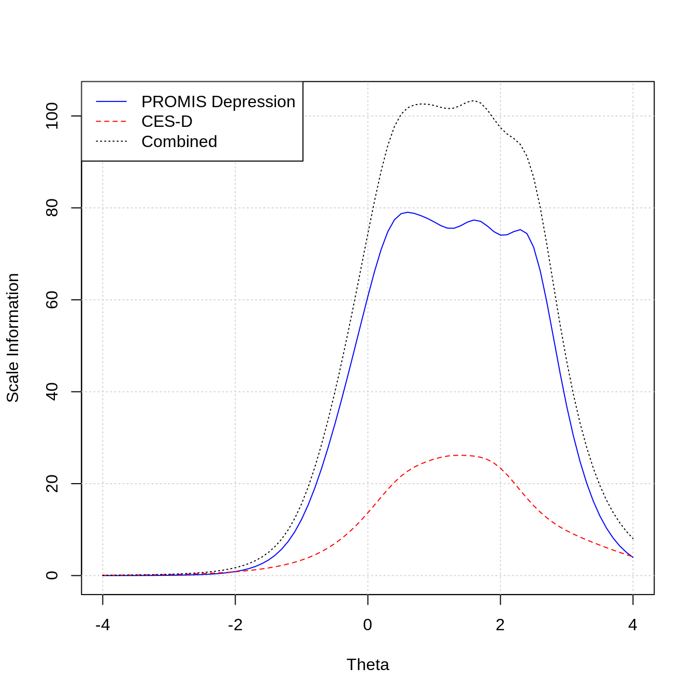
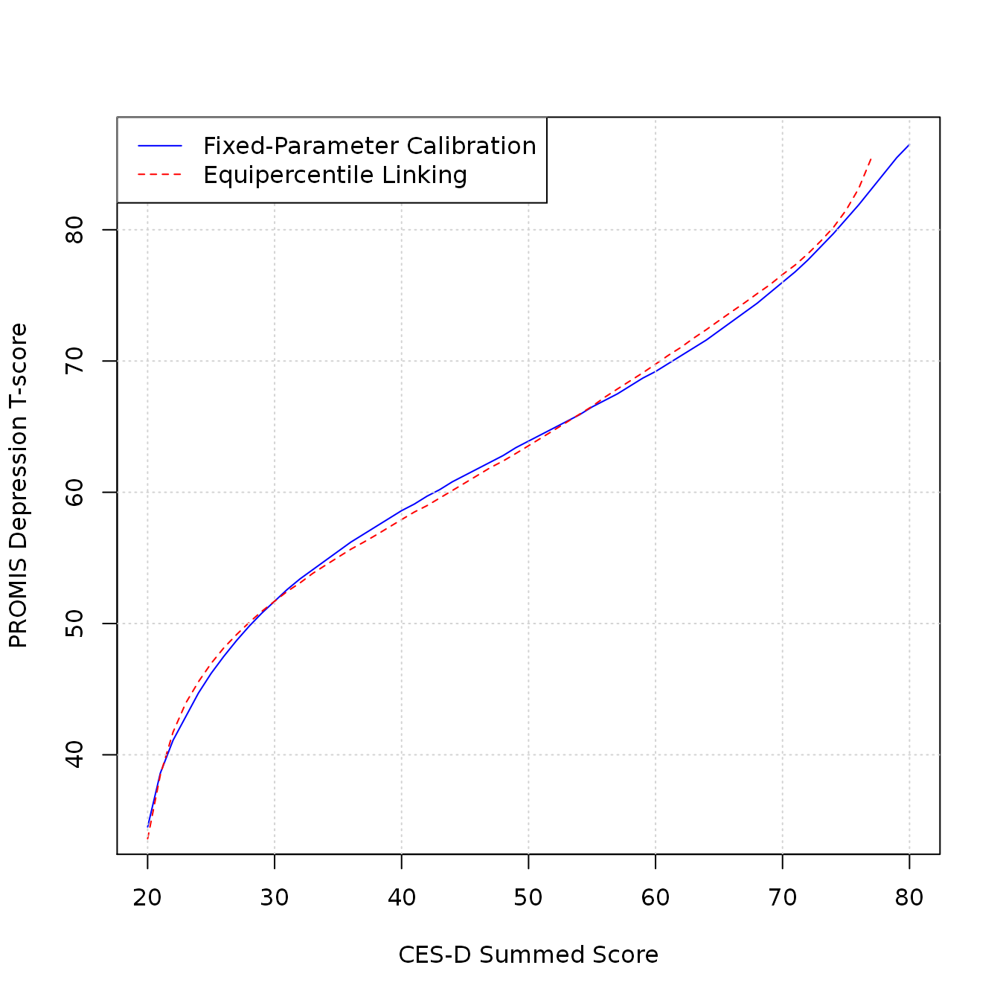

This vignette explains how to perform scale linking with the PROsetta package. By way of illustration, we replicate the linking of the Center for Epidemiologic Studies Depression Scale (CES-D) to the PROMIS Depression metric as described in Choi, Schalet, Cook, and Cella (2014).
First step is to load the input datasets comprised of three tables with loadData(). The PROMIS Depression – CES-D linking data are included in the PROsetta package directory under the folder labeled data-raw.
fp = system.file("data-raw", package = "PROsetta") d = loadData( response = "dat_DeCESD_v2.csv", itemmap = "imap_DeCESD.csv", anchor = "anchor_DeCESD.csv", input_dir = fp)
response: Contains item response data from both instruments. You can supply a .csv filename or a data frame. In this example, we supply a .csv filename dat_DeCESD_v2.csv.itemmap: Specifies which items belong to which instruments. Can be a .csv filename or a data frame.anchor: Contains tem parameters for anchor items (e.g., PROMIS Depression). Can be a .csv filename or a data frame.input_dir: (Optional) The path of the directory to look for the input .csv files.The response data contains individual item responses on both instruments (i.e., 28 PROMIS Depression items followed by 20 CES-D items). The data table should include the following columns.
prosettaid: The person ID of the respondents (N = 747). This column does not have to be named prosettaid but should not conflict with other data tables (item map and anchor).item_id column in both the item map and anchor files.Run the following code, for example, to open the response data in edit mode.
file.edit(system.file("data-raw", "dat_DeCESD_v2.csv", package = "PROsetta"))
The item map data requires the following columns.
item_id: Contains the unique ID of the items. The name of this column does not have to be item_id but should be consistent with the item ID column in the anchor table. The IDs in this column should match the column names in the response data.instrument: Numerals (1 or 2) indicating to which of the two instruments the items belong (e.g., 1 = PROMIS Depression; 2 = CES-D)item_order: The sequential position of the items in the combined table (e.g., 1, 2, 3, …, 28, …, 48)item_name: Secondary labels for the itemsncat: The number of response categories by itemmin_score: The minimum score by item (0 or 1)reverse: Indicating whether each item has been reverse scored (0 = not reversed; 1 = reversed)scores: A string containing comma-separated values for all possible scores of each item (e.g., “1,2,3,4,5”)Run the following code to open the item map data in edit mode.
file.edit(system.file("data-raw", "imap_DeCESD.csv" , package = "PROsetta"))
The anchor data contains the item parameters for the anchor scale (e.g., PROMIS Depression) and requires the following columns.
item_order: The sequential position of the items in the anchor scale (e.g., 1, 2, 3, …, 28)item_id: The unique ID of the anchor items. The name of this column does not have to be item_id but should be consistent with the item ID column in the item map table The IDs in this column should refer to the specific column names in the response data.a: The slope parameter value for each anchor itemcb1, cb2, …: The category boundary parameter values for each anchor itemncat: The number of response categories for each anchor itemRun the following code to open the anchor data in edit mode.
file.edit(system.file("data-raw", "anchor_DeCESD.csv", package = "PROsetta"))
The frequency distribution of each item in the response data is obtained by runFrequency().
freq_table = runFrequency(d) head(freq_table)
## 1 2 3 4 5
## EDDEP04 526 112 66 29 14
## EDDEP05 488 118 91 37 12
## EDDEP06 502 119 85 30 10
## EDDEP07 420 155 107 49 16
## EDDEP09 492 132 89 25 9
## EDDEP14 445 150 101 37 14The frequency distribution of the summed scores for the combined scale can be plotted as a histogram with plot(). The required argument is a PROsetta_data object created with loadData(). The optional scale argument specifies for which scale the summed score should be created. Setting scale = 'combined' plots the summed score distribution for the combined scale.
plot(d, scale = 'combined', title = "Combined scale")
The user can also generate the summed score distribution for the first or second scale by specifying scale = 1 or scale = 2.
Basic descriptive statistics are obtained for each item by runDescriptive().
desc_table = runDescriptive(d) head(desc_table)
## n mean sd median trimmed mad min max range skew kurtosis se
## EDDEP04 747 1.52 0.94 1 1.30 0 1 5 4 1.91 3.01 0.03
## EDDEP05 746 1.62 0.99 1 1.42 0 1 5 4 1.54 1.50 0.04
## EDDEP06 746 1.56 0.94 1 1.37 0 1 5 4 1.66 2.01 0.03
## EDDEP07 747 1.78 1.05 1 1.59 0 1 5 4 1.23 0.59 0.04
## EDDEP09 747 1.56 0.91 1 1.38 0 1 5 4 1.62 1.98 0.03
## EDDEP14 747 1.69 1.00 1 1.51 0 1 5 4 1.38 1.12 0.04Classical reliability statistics can be obtained by runClassical(). By default, the analysis is performed for the combined scale.
classical_table = runClassical(d) summary(classical_table$alpha$combined)
##
## Reliability analysis
## raw_alpha std.alpha G6(smc) average_r S/N ase mean sd median_r
## 0.98 0.98 0.99 0.53 54 9e-04 1.7 0.69 0.54The user can set scalewise = TRUE to request an analysis for each scale separately in addition to the combined scale.
classical_table = runClassical(d, scalewise = TRUE) classical_table$alpha$combined # alpha values for combined scale classical_table$alpha$`1` # alpha values for each scale, created when scalewise = TRUE classical_table$alpha$`2` # alpha values for each scale, created when scalewise = TRUE
Specifying omega = TRUE returns the McDonald’s \(\omega\) coefficients as well.
classical_table = runClassical(d, scalewise = TRUE, omega = TRUE) classical_table$omega$combined # omega values for combined scale classical_table$omega$`1` # omega values for each scale, created when scalewise = TRUE classical_table$omega$`2` # omega values for each scale, created when scalewise = TRUE
Additional arguments can be supplied to runClassical() to pass onto psych::omega().
classical_table = runClassical(d, scalewise = TRUE, omega = TRUE, nfactors = 5) # not run
Dimensionality analysis is performed with CFA by runCFA(). Setting scalewise = TRUE performs the dimensionality analysis for each scale separately in addition to the combined scale.
out_cfa = runCFA(d, scalewise = TRUE)
runCFA() calls for lavaan::cfa() internally and can pass additional arguments onto it.
out_cfa = runCFA(d, scalewise = TRUE, std.lv = TRUE) # not run
The CFA result for the combined scale is stored in the combined slot, and if scalewise = TRUE, the analysis for each scale is also stored in each numbered slot.
out_cfa$combined
## lavaan 0.6-6 ended normally after 23 iterations
##
## Estimator DWLS
## Optimization method NLMINB
## Number of free parameters 220
##
## Used Total
## Number of observations 731 747
##
## Model Test User Model:
## Standard Robust
## Test Statistic 4227.611 4700.781
## Degrees of freedom 1080 1080
## P-value (Chi-square) 0.000 0.000
## Scaling correction factor 1.046
## Shift parameter 657.455
## simple second-order correctionout_cfa$`1`
## lavaan 0.6-6 ended normally after 16 iterations
##
## Estimator DWLS
## Optimization method NLMINB
## Number of free parameters 140
##
## Used Total
## Number of observations 738 747
##
## Model Test User Model:
## Standard Robust
## Test Statistic 863.527 1434.277
## Degrees of freedom 350 350
## P-value (Chi-square) 0.000 0.000
## Scaling correction factor 0.678
## Shift parameter 160.257
## simple second-order correctionout_cfa$`2`
## lavaan 0.6-6 ended normally after 20 iterations
##
## Estimator DWLS
## Optimization method NLMINB
## Number of free parameters 80
##
## Used Total
## Number of observations 740 747
##
## Model Test User Model:
## Standard Robust
## Test Statistic 1106.148 1431.797
## Degrees of freedom 170 170
## P-value (Chi-square) 0.000 0.000
## Scaling correction factor 0.812
## Shift parameter 69.205
## simple second-order correctionCFA fit indices can be obtained by using summary() from the lavaan package. For the combined scale:
lavaan::summary(out_cfa$combined, fit.measures = TRUE, standardized = TRUE, estimates = FALSE)
## lavaan 0.6-6 ended normally after 23 iterations
##
## Estimator DWLS
## Optimization method NLMINB
## Number of free parameters 220
##
## Used Total
## Number of observations 731 747
##
## Model Test User Model:
## Standard Robust
## Test Statistic 4227.611 4700.781
## Degrees of freedom 1080 1080
## P-value (Chi-square) 0.000 0.000
## Scaling correction factor 1.046
## Shift parameter 657.455
## simple second-order correction
##
## Model Test Baseline Model:
##
## Test statistic 793198.137 91564.633
## Degrees of freedom 1128 1128
## P-value 0.000 0.000
## Scaling correction factor 8.758
##
## User Model versus Baseline Model:
##
## Comparative Fit Index (CFI) 0.996 0.960
## Tucker-Lewis Index (TLI) 0.996 0.958
##
## Robust Comparative Fit Index (CFI) NA
## Robust Tucker-Lewis Index (TLI) NA
##
## Root Mean Square Error of Approximation:
##
## RMSEA 0.063 0.068
## 90 Percent confidence interval - lower 0.061 0.066
## 90 Percent confidence interval - upper 0.065 0.070
## P-value RMSEA <= 0.05 0.000 0.000
##
## Robust RMSEA NA
## 90 Percent confidence interval - lower NA
## 90 Percent confidence interval - upper NA
##
## Standardized Root Mean Square Residual:
##
## SRMR 0.051 0.051and also for each scale separately:
lavaan::summary(out_cfa$`1` , fit.measures = TRUE, standardized = TRUE, estimates = FALSE) # not run lavaan::summary(out_cfa$`2` , fit.measures = TRUE, standardized = TRUE, estimates = FALSE) # not run
runCalibration() performs IRT calibration without anchoring. runCalibration() calls mirt::mirt() internally. Additional arguments can be passed onto mirt, e.g., to increase the number of EM cycles to 1000, as follows:
out_calib = runCalibration(d, technical = list(NCYCLES = 1000))
In case of nonconvergence, runCalibration() explicitly raises an error and does not return its results:
out_calib = runCalibration(d, technical = list(NCYCLES = 10))
## Error in runCalibration(d, technical = list(NCYCLES = 10)): calibration did not converge: increase iteration limit by adjusting the 'technical' argument, e.g., technical = list(NCYCLES = 510)Also, specify fixedpar = TRUE to perform fixed parameter calibration using the anchor data.
out_calib = runCalibration(d, fixedpar = TRUE)
The output object from runCalibration() can be used to generate additional output with functions from the mirt package.
Use coef() to extract item parameters:
mirt::coef(out_calib, IRTpars = TRUE, simplify = TRUE)
## $items
## a b1 b2 b3 b4
## EDDEP04 4.261 0.401 0.976 1.696 2.444
## EDDEP05 3.932 0.305 0.913 1.593 2.412
## EDDEP06 4.145 0.350 0.915 1.678 2.471
## EDDEP07 2.802 0.148 0.772 1.603 2.538
## EDDEP09 3.657 0.312 0.982 1.782 2.571
## EDDEP14 2.333 0.186 0.947 1.729 2.633
## EDDEP17 3.274 -0.498 0.406 1.413 2.375
## EDDEP19 3.241 0.460 1.034 1.834 2.515
## EDDEP21 2.736 0.072 0.810 1.803 2.673
## EDDEP22 3.970 0.204 0.795 1.649 2.295
## EDDEP23 2.564 -0.038 0.693 1.653 2.584
## EDDEP26 3.093 -0.358 0.412 1.404 2.224
## EDDEP27 2.920 0.204 0.891 1.655 2.528
## EDDEP28 2.588 -0.079 0.633 1.477 2.328
## EDDEP29 4.343 -0.117 0.598 1.428 2.272
## EDDEP30 2.613 -0.023 0.868 1.864 2.826
## EDDEP31 3.183 -0.261 0.397 1.305 2.134
## EDDEP35 3.106 0.044 0.722 1.639 2.471
## EDDEP36 3.483 -0.536 0.348 1.347 2.355
## EDDEP39 3.131 0.918 1.481 2.164 2.856
## EDDEP41 4.454 0.558 1.074 1.779 2.530
## EDDEP42 2.364 0.210 0.987 1.906 2.934
## EDDEP44 2.549 0.194 1.012 2.013 3.126
## EDDEP45 2.834 0.141 0.907 1.846 2.875
## EDDEP46 2.381 -0.458 0.478 1.546 2.632
## EDDEP48 3.185 0.198 0.782 1.526 2.324
## EDDEP50 2.018 -0.050 0.926 2.000 2.966
## EDDEP54 2.685 -0.299 0.423 1.358 2.308
## CESD1 2.074 0.876 1.921 3.064 NA
## CESD2 1.262 1.387 2.670 3.721 NA
## CESD3 3.512 0.833 1.316 1.949 NA
## CESD4 1.118 0.649 1.379 2.081 NA
## CESD5 1.605 0.429 1.526 2.724 NA
## CESD6 3.635 0.493 1.176 1.729 NA
## CESD7 1.828 0.287 1.368 2.134 NA
## CESD8 1.342 -0.067 0.823 1.620 NA
## CESD9 3.003 0.748 1.374 1.855 NA
## CESD10 2.060 1.172 2.043 3.268 NA
## CESD11 1.077 -0.463 0.947 2.160 NA
## CESD12 2.229 0.169 0.945 1.737 NA
## CESD13 1.288 0.342 1.696 2.915 NA
## CESD14 2.176 0.491 1.291 1.864 NA
## CESD15 1.397 0.965 2.321 3.604 NA
## CESD16 2.133 0.272 0.922 1.808 NA
## CESD17 1.719 1.607 2.317 3.470 NA
## CESD18 2.812 0.261 1.248 1.984 NA
## CESD19 1.834 0.784 1.875 2.639 NA
## CESD20 1.491 -0.140 1.256 2.297 NA
##
## $means
## F1
## -0.06
##
## $cov
## F1
## F1 0.95and also other commonly used functions:
mirt::itemfit(out_calib, empirical.plot = 1) mirt::itemplot(out_calib, item = 1, type = "info") mirt::itemfit(out_calib, "S_X2", na.rm = TRUE)
Scale information functions can be plotted with plotInfo. The two required arguments are an output object from runCalibration() and a PROsetta object from loadData(). The additional arguments specify the labels, colors, and line types for each scale and the combined scale. The last values in arguments scale_label, color, lty represent the values for the combined scale.
plotInfo( out_calib, d, scale_label = c("PROMIS Depression", "CES-D", "Combined"), color = c("blue", "red", "black"), lty = c(1, 2, 3))

runLinking() performs item parameter linking based on the anchor item parameters supplied in the anchor table. Two linking, or more specifically scaling aligning, methods currently available are fixed-parameter calibration and linear transformation. Fixed-parameter calibration estimates the item parameters for the non-anchor items on the metric defined by the anchor items, while fixing the item parameters for the anchor items to their supplied anchor values. The linear transformation methods determine linear transformation constants, i.e., a slope and an intercept, to transform freely estimated item parameters to the metric defined by the anchor items.
Scale aligning through fixed parameter calibration is performed by setting method = "FIXEDPAR". The linked parameters are stored in the $ipar_linked slot.
out_link_fixedpar = runLinking(d, method = "FIXEDPAR")
out_link_fixedpar$ipar_linked
## a b1 b2 b3 b4
## EDDEP04 4.261422 0.40106943 0.9756732 1.696300 2.444072
## EDDEP05 3.931743 0.30494182 0.9130961 1.593476 2.411682
## EDDEP06 4.144759 0.35011299 0.9153482 1.678203 2.470526
## EDDEP07 2.801804 0.14774854 0.7723478 1.602715 2.538057
## EDDEP09 3.657433 0.31195821 0.9818087 1.782108 2.571127
## EDDEP14 2.333381 0.18599340 0.9473173 1.728770 2.632643
## EDDEP17 3.274033 -0.49845044 0.4059439 1.413052 2.375459
## EDDEP19 3.240973 0.46049359 1.0344267 1.833595 2.514716
## EDDEP21 2.736104 0.07245992 0.8097820 1.803067 2.673441
## EDDEP22 3.970028 0.20379963 0.7954889 1.648707 2.295496
## EDDEP23 2.564431 -0.03841113 0.6926952 1.652820 2.583629
## EDDEP26 3.093368 -0.35762208 0.4124999 1.403863 2.223961
## EDDEP27 2.920056 0.20434012 0.8909159 1.654652 2.528368
## EDDEP28 2.588339 -0.07908821 0.6326205 1.477330 2.327715
## EDDEP29 4.342918 -0.11730304 0.5977487 1.428166 2.272495
## EDDEP30 2.612846 -0.02337743 0.8683854 1.864303 2.826340
## EDDEP31 3.182866 -0.26089392 0.3967655 1.305464 2.133989
## EDDEP35 3.105857 0.04371372 0.7223523 1.638758 2.471487
## EDDEP36 3.483012 -0.53588456 0.3475707 1.346781 2.354790
## EDDEP39 3.131213 0.91802061 1.4813240 2.163996 2.856377
## EDDEP41 4.454157 0.55838282 1.0742430 1.779346 2.530080
## EDDEP42 2.364413 0.21006534 0.9870936 1.905901 2.933758
## EDDEP44 2.549164 0.19350024 1.0117460 2.013109 3.126494
## EDDEP45 2.833605 0.14071213 0.9065001 1.846097 2.875194
## EDDEP46 2.380628 -0.45788346 0.4779996 1.545663 2.631512
## EDDEP48 3.185244 0.19814448 0.7819065 1.525815 2.324082
## EDDEP50 2.018099 -0.05044210 0.9258678 1.999516 2.965507
## EDDEP54 2.685300 -0.29880847 0.4234598 1.357851 2.307647
## CESD1 2.074444 0.87587984 1.9208511 3.063584 NA
## CESD2 1.262451 1.38731915 2.6695212 3.720538 NA
## CESD3 3.512491 0.83271867 1.3159728 1.948793 NA
## CESD4 1.118259 0.64881746 1.3786416 2.081166 NA
## CESD5 1.604925 0.42935048 1.5261797 2.723722 NA
## CESD6 3.634676 0.49267523 1.1756150 1.729145 NA
## CESD7 1.827678 0.28707355 1.3677915 2.134161 NA
## CESD8 1.341785 -0.06692893 0.8227666 1.619582 NA
## CESD9 3.002590 0.74752444 1.3741498 1.855368 NA
## CESD10 2.060397 1.17177995 2.0425555 3.268034 NA
## CESD11 1.076592 -0.46319903 0.9471604 2.159806 NA
## CESD12 2.229319 0.16859311 0.9449513 1.736562 NA
## CESD13 1.288446 0.34213321 1.6959382 2.915161 NA
## CESD14 2.176410 0.49140721 1.2914088 1.864274 NA
## CESD15 1.396545 0.96457778 2.3205011 3.603938 NA
## CESD16 2.132821 0.27238871 0.9216833 1.808275 NA
## CESD17 1.718813 1.60657503 2.3169964 3.469718 NA
## CESD18 2.812165 0.26144299 1.2484440 1.984111 NA
## CESD19 1.833678 0.78350049 1.8751249 2.638591 NA
## CESD20 1.490736 -0.14037608 1.2558591 2.296857 NAScale aligning through linear transformation is performed by setting the method argument to one of the following options:
MM (Mean-Mean)MS (Mean-Sigma)HB (Haebara)SL (Stocking-Lord)Arguments supplied to runLinking are passed onto mirt::mirt() internally. In case of nonconvergence in the free calibration step, runLinking() explicitly raises an error and does not return its results.
out_link_sl = runLinking(d, method = "SL", technical = list(NCYCLES = 1000)) out_link_sl
The item parameter estimates linked to the anchor metric are stored in the $ipar_linked slot.
out_link_sl$ipar_linked
## a b1 b2 b3 b4
## EDDEP04 3.793106 0.46953212 1.0795380 1.723902 2.349080
## EDDEP05 3.320354 0.33290422 0.8987366 1.652727 2.495483
## EDDEP06 3.425929 0.38780442 1.0150093 1.791368 2.554682
## EDDEP07 2.515482 0.07923568 0.8041335 1.613015 2.489920
## EDDEP09 3.473099 0.33392655 1.0061960 1.872559 2.581157
## EDDEP14 2.593301 0.16626017 0.8908928 1.766004 2.578982
## EDDEP17 3.271621 -0.48405068 0.3934650 1.378820 2.485108
## EDDEP19 3.288481 0.59409498 1.1569694 1.908309 2.491027
## EDDEP21 2.658933 -0.00888261 0.7996165 1.769781 2.587527
## EDDEP22 3.694409 0.20295528 0.7692476 1.679950 2.211225
## EDDEP23 2.558593 -0.11244069 0.6118740 1.527155 2.413629
## EDDEP26 2.978919 -0.35970136 0.4134180 1.383128 2.206005
## EDDEP27 2.945555 0.22021924 0.9013543 1.670467 2.546560
## EDDEP28 2.533113 -0.08989079 0.6379707 1.516827 2.353177
## EDDEP29 3.641936 -0.10895450 0.6340873 1.413201 2.313972
## EDDEP30 2.366324 -0.14428206 0.8036432 1.852480 2.826835
## EDDEP31 2.859300 -0.27267503 0.3784903 1.397100 2.247133
## EDDEP35 2.833410 -0.09113092 0.6508349 1.594375 2.513019
## EDDEP36 3.831035 -0.40940942 0.4298675 1.362455 2.182996
## EDDEP39 2.921711 1.01321222 1.5973642 2.147481 2.830996
## EDDEP41 4.290542 0.40388165 1.0501864 1.653615 2.444908
## EDDEP42 2.203142 -0.06187779 0.8051789 1.819107 2.845103
## EDDEP44 2.487201 0.26507902 1.0153993 2.024894 3.207756
## EDDEP45 2.598381 0.07189328 0.9289151 2.065916 2.910989
## EDDEP46 2.580540 -0.30095598 0.4971936 1.463756 2.349175
## EDDEP48 3.192247 0.30187538 0.7763982 1.670602 2.269183
## EDDEP50 2.171916 0.09499735 0.9605645 1.915715 2.757296
## EDDEP54 2.962329 -0.17881320 0.5521145 1.377952 2.253458
## CESD1 2.061773 0.87947084 1.9314955 3.076902 NA
## CESD2 1.255553 1.39241408 2.6815855 3.738046 NA
## CESD3 3.508777 0.83748606 1.3247605 1.957234 NA
## CESD4 1.111395 0.65000761 1.3850782 2.091837 NA
## CESD5 1.593889 0.42858392 1.5343158 2.738423 NA
## CESD6 3.618584 0.49297364 1.1842599 1.739734 NA
## CESD7 1.811272 0.28542330 1.3764438 2.148182 NA
## CESD8 1.332343 -0.07080969 0.8265583 1.629128 NA
## CESD9 2.980163 0.75148852 1.3836664 1.866732 NA
## CESD10 2.054297 1.17618821 2.0499499 3.277151 NA
## CESD11 1.072250 -0.46951112 0.9481344 2.166839 NA
## CESD12 2.220280 0.16484476 0.9489167 1.745283 NA
## CESD13 1.279643 0.34071866 1.7050042 2.932278 NA
## CESD14 2.165042 0.49099702 1.2981462 1.874622 NA
## CESD15 1.388292 0.96778855 2.3321691 3.621486 NA
## CESD16 2.119594 0.27026351 0.9262701 1.818615 NA
## CESD17 1.720568 1.60937568 2.3204223 3.472177 NA
## CESD18 2.803344 0.25788126 1.2547128 1.992341 NA
## CESD19 1.820452 0.78621179 1.8859194 2.652889 NA
## CESD20 1.482218 -0.14577705 1.2604353 2.307638 NATransformation constants (A = slope; B = intercept) for the specified linear transformation method are stored in the $constants slot.
out_link_sl$constants
## A B
## 0.982314 -0.064358From the item parameter estimates transformed to the anchor metric, raw-score-to-scale-score (rsss) crosswalk tables can be generated by runRSSS().
The output from runRSSS() includes three crosswalk tables (labeled as 1, 2, and combined), one for each scale and the third one for the combined scale. Each table contains raw summed scores and corresponding scaled scores, including summed score EAP estimate, T-scores corresponding to the EAP estimates, as well as expected summed scores (i.e., true scores) for each scale from the EAP estimates.
rsss_fixedpar = runRSSS(d, out_link_fixedpar) rsss_sl = runRSSS(d, out_link_sl) round(rsss_fixedpar$`2`, 3)
## raw_2 tscore tscore_se eap eap_se escore_1 escore_2 escore_combined
## 1 20 34.5 6.0 -1.554 0.599 28.455 21.105 49.560
## 2 21 38.6 5.1 -1.139 0.509 29.340 21.851 51.192
## 3 22 41.1 4.7 -0.892 0.473 30.503 22.523 53.026
## 4 23 42.9 4.5 -0.713 0.455 31.837 23.154 54.991
## 5 24 44.7 4.1 -0.534 0.412 33.735 23.950 57.685
## 6 25 46.2 3.8 -0.382 0.382 35.853 24.777 60.630
## 7 26 47.5 3.6 -0.248 0.357 38.134 25.636 63.769
## 8 27 48.7 3.3 -0.128 0.335 40.558 26.535 67.093
## 9 28 49.8 3.2 -0.020 0.316 43.052 27.459 70.511
## 10 29 50.8 3.0 0.080 0.300 45.580 28.401 73.981
## 11 30 51.7 2.9 0.171 0.287 48.114 29.358 77.471
## 12 31 52.6 2.8 0.256 0.275 50.629 30.324 80.953
## 13 32 53.4 2.7 0.336 0.266 53.105 31.297 84.402
## 14 33 54.1 2.6 0.411 0.257 55.527 32.273 87.801
## 15 34 54.8 2.5 0.482 0.250 57.886 33.251 91.137
## 16 35 55.5 2.4 0.550 0.244 60.176 34.228 94.405
## 17 36 56.2 2.4 0.615 0.239 62.397 35.205 97.601
## 18 37 56.8 2.3 0.678 0.235 64.549 36.179 100.728
## 19 38 57.4 2.3 0.739 0.231 66.637 37.152 103.788
## 20 39 58.0 2.3 0.798 0.228 68.665 38.122 106.788
## 21 40 58.6 2.3 0.856 0.225 70.639 39.092 109.731
## 22 41 59.1 2.2 0.912 0.223 72.564 40.060 112.625
## 23 42 59.7 2.2 0.967 0.221 74.444 41.029 115.472
## 24 43 60.2 2.2 1.022 0.219 76.283 41.997 118.280
## 25 44 60.8 2.2 1.075 0.218 78.086 42.965 121.051
## 26 45 61.3 2.2 1.128 0.216 79.858 43.933 123.792
## 27 46 61.8 2.2 1.181 0.215 81.604 44.902 126.506
## 28 47 62.3 2.1 1.233 0.215 83.329 45.871 129.200
## 29 48 62.8 2.1 1.285 0.214 85.038 46.840 131.878
## 30 49 63.4 2.1 1.336 0.214 86.737 47.810 134.547
## 31 50 63.9 2.1 1.388 0.214 88.432 48.780 137.211
## 32 51 64.4 2.1 1.439 0.214 90.126 49.750 139.875
## 33 52 64.9 2.1 1.491 0.214 91.823 50.721 142.544
## 34 53 65.4 2.1 1.543 0.215 93.528 51.692 145.220
## 35 54 65.9 2.2 1.595 0.216 95.241 52.666 147.907
## 36 55 66.5 2.2 1.647 0.217 96.965 53.640 150.605
## 37 56 67.0 2.2 1.701 0.218 98.700 54.616 153.316
## 38 57 67.5 2.2 1.755 0.220 100.446 55.594 156.040
## 39 58 68.1 2.2 1.809 0.222 102.205 56.572 158.777
## 40 59 68.7 2.2 1.865 0.225 103.978 57.549 161.528
## 41 60 69.2 2.3 1.922 0.227 105.768 58.526 164.294
## 42 61 69.8 2.3 1.980 0.231 107.579 59.499 167.078
## 43 62 70.4 2.3 2.040 0.234 109.416 60.467 169.884
## 44 63 71.0 2.4 2.101 0.239 111.287 61.429 172.716
## 45 64 71.6 2.4 2.164 0.243 113.196 62.383 175.579
## 46 65 72.3 2.5 2.230 0.248 115.149 63.326 178.476
## 47 66 73.0 2.5 2.297 0.254 117.147 64.259 181.407
## 48 67 73.7 2.6 2.367 0.260 119.185 65.181 184.366
## 49 68 74.4 2.7 2.440 0.267 121.251 66.091 187.342
## 50 69 75.2 2.7 2.517 0.274 123.325 66.991 190.316
## 51 70 76.0 2.8 2.597 0.282 125.380 67.883 193.263
## 52 71 76.8 2.9 2.682 0.290 127.385 68.767 196.152
## 53 72 77.7 3.0 2.772 0.299 129.303 69.646 198.949
## 54 73 78.7 3.1 2.868 0.308 131.102 70.521 201.623
## 55 74 79.7 3.2 2.970 0.316 132.749 71.391 204.140
## 56 75 80.8 3.2 3.079 0.322 134.215 72.248 206.463
## 57 76 81.9 3.2 3.193 0.324 135.475 73.079 208.554
## 58 77 83.1 3.2 3.311 0.320 136.511 73.863 210.375
## 59 78 84.3 3.1 3.428 0.306 137.324 74.576 211.900
## 60 79 85.4 2.8 3.541 0.283 137.936 75.198 213.134
## 61 80 86.4 2.5 3.643 0.252 138.374 75.711 214.085The columns in the crosswalk tables include:
raw_1: raw summed score in Scale 1 (also raw_2 for Scale 2 and raw_3 for the combined)tscore: T-score corresponding to each summed scoretscore_se: standard error associated with each T-scoreeap: summed score EAP equivalent for each raw summed scoreeap_se: standard error associated with each EAP estimateescore_1: expected summed score (true score) for Scale 1 given the EAP estimateescore_2: expected summed score (true score) for Scale 2 given the EAP estimateescore_combined: expected summed score (true score) for the combined scale given the EAP estimateEquipercentile linking of observed summed scores is performed by runEquateObserved().
Cases with missing responses are removed to be able to generate correct summed scores in concordance tables.
This function requires four arguments:
scale_from: numeric index of the scale (as specified in the item map) to be linkedscale_to: numeric index of the scale (as specified in the item map) to serve as the anchoreq_type: the type of equating to be performed, equipercentile for this example. See ?equate::equate for details.smooth: the type of presmoothing to performBy default, runEquateObserved() performs raw-raw equipercentile linking. In this example, each raw summed score in Scale 2 (CES-D, ranging from 20 to 80) is linked to a raw summed score equivalent in Scale 1 (PROMIS Depression, rangeing from 28 to 140) with loglinear presmoothing.
out_equate = runEquateObserved( d, scale_from = 2, scale_to = 1, eq_type = "equipercentile", smooth = "loglinear")
The crosswalk table can be obtained from the concordance slot:
out_equate$concordance
## raw_2 raw_1 raw_1_se raw_1_se_boot
## 1 20 28.26881 0.1620936 0.1511929
## 2 21 29.88299 0.3370778 0.3234589
## 3 22 31.53492 0.5039397 0.4792655
## 4 23 33.26052 0.6025077 0.6575634
## 5 24 35.04116 0.7605541 0.8125058
## 6 25 36.88206 0.9289581 1.0043671
## 7 26 38.78932 1.1047990 1.1135455
## 8 27 40.76619 1.2851847 1.2518372
## 9 28 42.81301 1.4675514 1.3717115
## 10 29 44.92722 1.6498695 1.5381589
## 11 30 47.10359 1.8307274 1.6733293
## 12 31 49.33456 2.0092834 1.9719448
## 13 32 51.61601 2.2830630 2.1190835
## 14 33 53.93979 2.4363247 2.2881793
## 15 34 56.28523 2.5838111 2.4463518
## 16 35 58.64518 2.8128224 2.6656923
## 17 36 61.00920 2.9230117 2.7456826
## 18 37 63.35840 3.0265741 2.8976647
## 19 38 65.68830 3.1931417 3.0675380
## 20 39 67.98827 3.2579872 3.1967941
## 21 40 70.24833 3.3160014 3.2942833
## 22 41 72.46413 3.3666557 3.2755812
## 23 42 74.63553 3.4696445 3.2253527
## 24 43 76.75786 3.4943506 3.3146691
## 25 44 78.83013 3.5156665 3.5365358
## 26 45 80.85299 3.5347321 3.4901278
## 27 46 82.82775 3.5532238 3.4965890
## 28 47 84.75618 3.5733950 3.5086839
## 29 48 86.64034 3.5981071 3.4987573
## 30 49 88.48280 3.5457997 3.6165460
## 31 50 90.28977 3.5652250 3.6759205
## 32 51 92.06044 3.5948509 3.6196884
## 33 52 93.79686 3.6397275 3.6756261
## 34 53 95.50073 3.7057230 3.7688498
## 35 54 97.18390 3.6406951 3.9841718
## 36 55 98.83962 3.7115896 4.0960804
## 37 56 100.46992 3.6731482 3.9532655
## 38 57 102.08880 3.7516801 4.0815659
## 39 58 103.68535 3.8710358 4.2679456
## 40 59 105.27044 3.8253417 4.3400742
## 41 60 106.84491 3.9636676 4.2879031
## 42 61 108.40599 3.9344712 4.2954532
## 43 62 109.96920 4.0965312 4.3957396
## 44 63 111.51836 4.3289986 4.5487508
## 45 64 113.08139 4.2728002 4.5543120
## 46 65 114.63738 4.5418401 4.7538047
## 47 66 116.20861 4.4956647 4.8988470
## 48 67 117.78972 4.7999844 4.7318069
## 49 68 119.38584 4.7678715 4.6343134
## 50 69 121.01883 5.0971545 4.9826631
## 51 70 122.67774 5.5168449 5.2376800
## 52 71 124.38914 5.4272766 5.3989573
## 53 72 126.17776 5.8150222 5.9573449
## 54 73 128.05913 6.2277413 6.3913330
## 55 74 130.07996 6.6010857 6.5325813
## 56 75 132.31127 6.8333301 6.5182649
## 57 76 134.91376 7.4633808 5.9413479
## 58 77 138.21074 6.3457311 3.9738500Raw summed scores can be linked to scaled scores (e.g., T-scores) directly by specifying type_to = 'tscore' in runEquateObserved(). In the following example, we map the raw summed scores from Scale 2 (CES-D, ranging from 20 to 80) onto the T-score equivalents in Scale 1 (PROMIS Depression, mean = 50 and SD = 10).
out_equate_tscore = runEquateObserved( d, scale_from = 2, scale_to = 1, type_to = "tscore", rsss = rsss_fixedpar, eq_type = "equipercentile", smooth = "loglinear")
Again, the crosswalk table can be retrieved from the concordance slot:
out_equate_tscore$concordance
## raw_2 tscore_1 tscore_1_se tscore_1_se_boot
## 1 20 33.60083 0.1015609 0.3944338
## 2 21 38.46470 0.2970378 1.1234778
## 3 22 41.72088 0.5245654 0.6235458
## 4 23 43.93295 0.7285069 0.5762143
## 5 24 45.56123 0.9010289 0.5527197
## 6 25 46.96124 1.0678017 0.6255641
## 7 26 48.14666 1.2233055 0.5968141
## 8 27 49.15448 1.4254433 0.5946646
## 9 28 50.08549 1.5482075 0.5954757
## 10 29 50.93657 1.6767441 0.5753210
## 11 30 51.70001 1.7912489 0.5688908
## 12 31 52.45301 1.9742908 0.5704430
## 13 32 53.09648 2.0696927 0.6169181
## 14 33 53.81858 2.1922447 0.6425165
## 15 34 54.44012 2.2936277 0.6399492
## 16 35 55.05321 2.3974989 0.6546189
## 17 36 55.65942 2.5038618 0.6572927
## 18 37 56.19080 2.5829270 0.6863462
## 19 38 56.74852 2.6933541 0.7551148
## 20 39 57.33477 2.8065641 0.7925872
## 21 40 57.91887 2.9226190 0.8229306
## 22 41 58.49324 3.0415032 0.8807782
## 23 42 58.98083 3.1268532 0.9112528
## 24 43 59.55723 3.2503680 0.9955377
## 25 44 60.13530 3.2562389 1.0312591
## 26 45 60.71545 3.3742282 1.0337129
## 27 46 61.29808 3.4940956 1.0872637
## 28 47 61.88376 3.6154779 1.1138223
## 29 48 62.38361 3.6937392 1.1804551
## 30 49 62.95607 3.8147446 1.2169945
## 31 50 63.54535 3.9358029 1.2395926
## 32 51 64.13827 4.0562608 1.2779973
## 33 52 64.73479 4.1754194 1.3373403
## 34 53 65.33470 4.2925412 1.4833069
## 35 54 65.93765 4.4068471 1.5609228
## 36 55 66.54309 4.5175066 1.5725870
## 37 56 67.23650 4.6801970 1.6009594
## 38 57 67.86853 4.7829123 1.6574383
## 39 58 68.48459 4.8792609 1.7696657
## 40 59 69.09953 4.9679138 1.8016463
## 41 60 69.75539 5.0472222 1.8103637
## 42 61 70.42661 5.1800353 1.8562749
## 43 62 71.03583 5.2373492 1.8930701
## 44 63 71.73857 5.3449940 1.8497358
## 45 64 72.38582 5.3694058 1.8370856
## 46 65 73.07610 5.4404408 1.8445259
## 47 66 73.75638 5.4884478 1.9051477
## 48 67 74.42313 5.5094652 2.1106223
## 49 68 75.12526 5.5710443 2.4315970
## 50 69 75.80164 5.5332570 2.4863030
## 51 70 76.58375 5.6112451 2.6731329
## 52 71 77.31188 5.2941848 3.0495686
## 53 72 78.16969 5.2738688 3.0951091
## 54 73 79.12447 5.3510692 3.2970421
## 55 74 80.16656 4.8846026 3.5193417
## 56 75 81.48128 4.8263511 3.5043888
## 57 76 83.14551 4.7715802 3.0821847
## 58 77 85.44547 3.1325285 2.3455996In what follows we display the linking relation obtained from the equipercentile method and compare it to that from the fixed-parameter calibration method.
plot( rsss_fixedpar$`2`$raw_2, rsss_fixedpar$`2`$tscore, xlab = "CES-D Summed Score", ylab = "PROMIS Depression T-score", type = "l", col = "blue") lines( out_equate_tscore$concordance$raw_2, out_equate_tscore$concordance$tscore_1, lty = 2, col = "red") grid() legend("topleft", c("Fixed-Parameter Calibration", "Equipercentile Linking"), lty = 1:2, col = c("blue", "red"), bg = "white")

The linking results produced so far are now evaluated. More specifically, we assess how closely the CES-D summed scores linked to the PROMIS Depression T-scores match the actual PROMIS Depression T-scores observed in the present linking sample. Should we have set aside a validation sample, we would have performed this evaluation on that sample.
To begin with, we create an object scores using getScaleSum() to contain raw summed scores on Scale 2 (i.e., CES-D). NA will result for any respondents with one or more missing responses on Scale 2. We could also create a summed score variable for Scale 1 using the same function, e.g., getScaleSum(d, 1).
scores = getScaleSum(d, 2) head(scores)
## prosettaid raw_2
## 1 100048 21
## 2 100049 21
## 3 100050 24
## 4 100051 26
## 5 100052 20
## 6 100053 21We obtain EAP estimates of theta on Scale 1 (i.e., PROMIS Depression) based on item response patterns using the getTheta() function. The first argument of the function is a data object of PROsetta class, which we created earlier with loadData(). The second argument specifies the item parameter estimates to be used for the EAP estimation. Here, we use the item parameter estimates previously obtained from the fixed-parameter calibration, out_link_fixedpar$ipar_linked. The third argument scale = 1 specifies the scale to be scored (i.e., PROMIS Depression). These EAP estimates are based on the item responses actually observed on PROMIS Depression and will serve as the reference when we assess the CES-D scores liked to PROMIS Depression derived from various methods.
eap_promis = getTheta(d, out_link_fixedpar$ipar_linked, scale = 1)$theta head(eap_promis)
## prosettaid theta_eap theta_se
## 1 100048 -0.42410653 0.1606312
## 2 100049 -1.15269342 0.3229802
## 3 100050 0.05281656 0.1176509
## 4 100051 -0.04622278 0.1238298
## 5 100052 -1.65063866 0.5049212
## 6 100053 -0.55824065 0.1812502The EAP esimates for PROMIS Depression will be converted to T-scores using a linear transformation.
t_promis = data.frame( prosettaid = eap_promis$prosettaid, t_promis = round(eap_promis$theta_eap * 10 + 50, 1)) head(t_promis)
## prosettaid t_promis
## 1 100048 45.8
## 2 100049 38.5
## 3 100050 50.5
## 4 100051 49.5
## 5 100052 33.5
## 6 100053 44.4We then merge the PROMIS Depression T-scores with the raw summed scores for CES-D calculated in the previous step.
scores = scores %>% inner_join(t_promis, by = "prosettaid") head(scores)
## prosettaid raw_2 t_promis
## 1 100048 21 45.8
## 2 100049 21 38.5
## 3 100050 24 50.5
## 4 100051 26 49.5
## 5 100052 20 33.5
## 6 100053 21 44.4Now we are going to generate T-scores linked to PROMIS Depression using only item responses on Scale 2 (CES-D). These T-scores linked to PROMIS Depression can be generated in different ways as:
The first two ways are based on the CES-D item parameters linked to the PROMIS Depression metric.
First, we get EAP estimates based on item response patterns on Scale 2 using the CES-D item parameters linked to the PROMIS Depression metric (via fixed-parameter calibration). We then linearly transform the EAP estimates to T-scores and add the T-scores (t_cesd_pattern) to the data frame object scores.
eap_cesd = getTheta(d, out_link_fixedpar$ipar_linked, scale = 2)$theta t_cesd_pattern = data.frame( prosettaid = eap_cesd$prosettaid, t_cesd_pattern = round(eap_cesd$theta_eap * 10 + 50, 1)) scores = scores %>% inner_join(t_cesd_pattern, by = "prosettaid") head(scores)
## prosettaid raw_2 t_promis t_cesd_pattern
## 1 100048 21 45.8 37.6
## 2 100049 21 38.5 37.6
## 3 100050 24 50.5 45.1
## 4 100051 26 49.5 48.5
## 5 100052 20 33.5 34.5
## 6 100053 21 44.4 37.6Second, we use the raw-score-to-scale-score (RSSS) crosswalk table obtained above using summed score EAP estimation to map each raw summed score on Scale 2 onto a T-score on the PROMIS Depression metric, t_cesd_rsss.
rsss_eap = data.frame( raw_2 = rsss_fixedpar$`2`$raw_2, t_cesd_rsss = round(rsss_fixedpar$`2`$tscore, 1)) scores = scores %>% inner_join(rsss_eap, by = "raw_2") head(scores)
## prosettaid raw_2 t_promis t_cesd_pattern t_cesd_rsss
## 1 100048 21 45.8 37.6 38.6
## 2 100049 21 38.5 37.6 38.6
## 3 100050 24 50.5 45.1 44.7
## 4 100051 26 49.5 48.5 47.5
## 5 100052 20 33.5 34.5 34.5
## 6 100053 21 44.4 37.6 38.6Third, we use the concordance table from equipercentile linking to map each raw summed score on Scale 2 onto a T-score on the PROMIS Depression metric, t_cesd_eqp.
rsss_eqp = data.frame( raw_2 = out_equate_tscore$concordance$raw_2, t_cesd_eqp = round(out_equate_tscore$concordance$tscore_1, 1)) scores = scores %>% inner_join(rsss_eqp, by = "raw_2") head(scores)
## prosettaid raw_2 t_promis t_cesd_pattern t_cesd_rsss t_cesd_eqp
## 1 100048 21 45.8 37.6 38.6 38.5
## 2 100049 21 38.5 37.6 38.6 38.5
## 3 100050 24 50.5 45.1 44.7 45.6
## 4 100051 26 49.5 48.5 47.5 48.1
## 5 100052 20 33.5 34.5 34.5 33.6
## 6 100053 21 44.4 37.6 38.6 38.5Finally, use compareScores() to compare the obtained T-scores.
# Reference score: IRT pattern scoring of Scale 1 c_pattern = compareScores(scores$t_promis, scores$t_cesd_pattern) ## IRT response pattern EAP to T-score c_rsss = compareScores(scores$t_promis, scores$t_cesd_rsss) ## IRT summed score EAP to T-score c_eqp = compareScores(scores$t_promis, scores$t_cesd_eqp) ## Equipercentile summed score to T-score stats = rbind(c_pattern, c_rsss, c_eqp) rownames(stats) = c("IRT Pattern", "IRT RSSS", "Equipercentile") stats
## corr mean sd rmsd mad
## IRT Pattern 0.8437275 0.31409029 5.452607 5.461646 4.237209
## IRT RSSS 0.8212425 0.09425445 5.772118 5.772887 4.442818
## Equipercentile 0.8153741 -0.01108071 5.849127 5.849137 4.450752